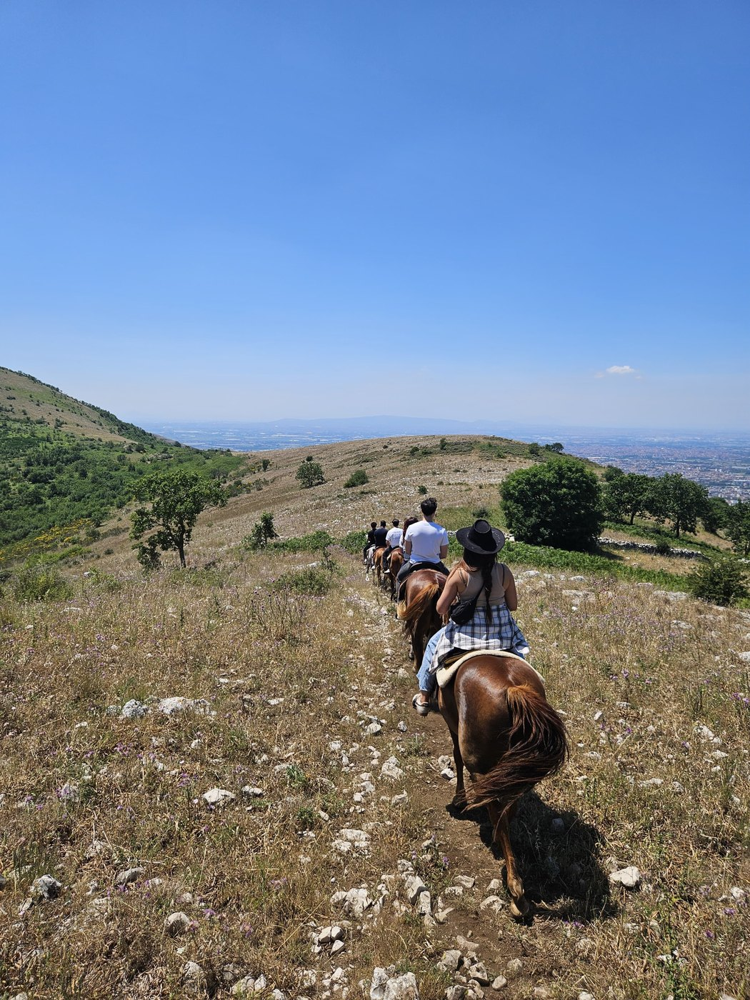
04
Expedition fuori Italia
Viaggi nel mondo alla scoperta di culture, territori e tradizioni legate al cavallo e alla vita rurale.
Run Wild · horse riding experience
Esperienze nella natura, a cavallo e non solo, per chi sente il bisogno di rallentare, riconnettersi e vivere qualcosa di autentico con sconosciuti.
Scopri le prossime ExperienceLe nostre Experience
Ogni esperienza nasce con lo stesso obiettivo: rallentare, vivere la natura e creare connessioni autentiche attraverso il viaggio, i cavalli e territori ancora incontaminati.
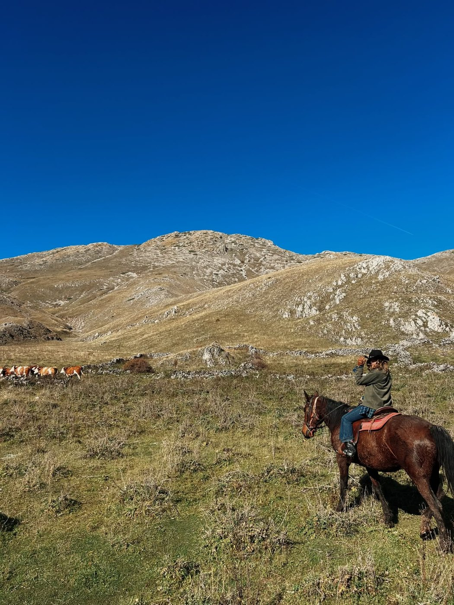
Vivi per due giorni accanto a una mandria, imparando a leggere i movimenti degli animali e collaborando con chi li accompagna ogni giorno.
Scopri il programma →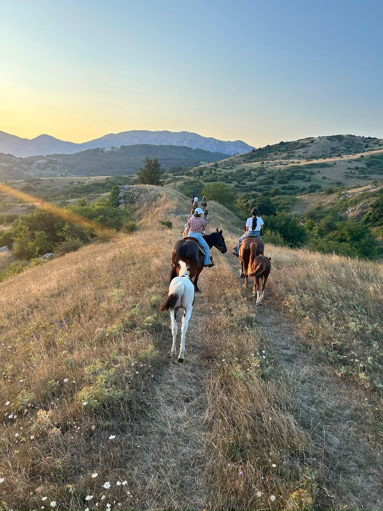
Due giorni tra cavalli, tende, trekking e notti sotto le stelle.
Scopri il programma →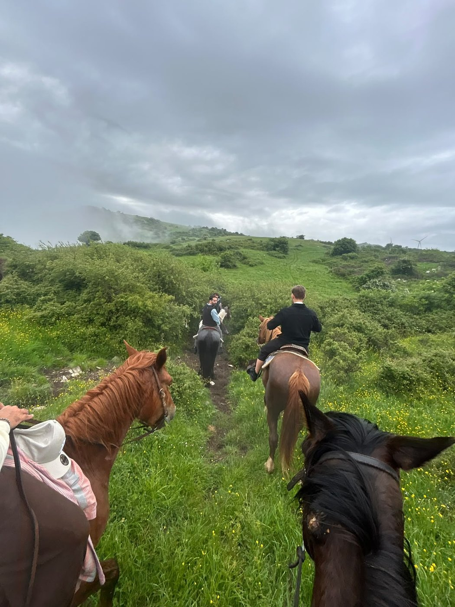
Percorsi giornalieri immersi nella natura per chi desidera scoprire il territorio da una prospettiva diversa.
Scopri il programma →
Viaggi nel mondo alla scoperta di culture, territori e tradizioni legate al cavallo e alla vita rurale.
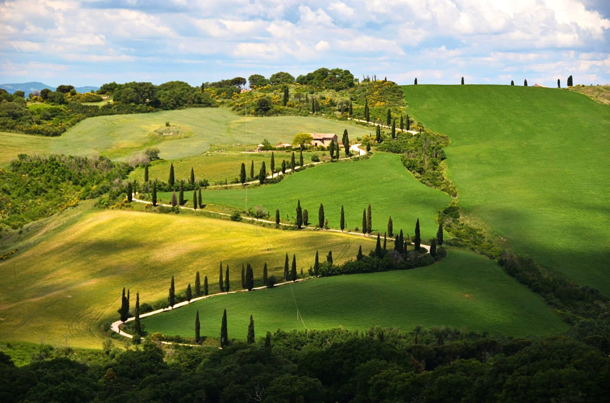
Un weekend nell'alta Maremma: trekking tra strade bianche e vigneti, notte in tenda in pineta e cena insieme sotto gli alberi.
Scopri il programma →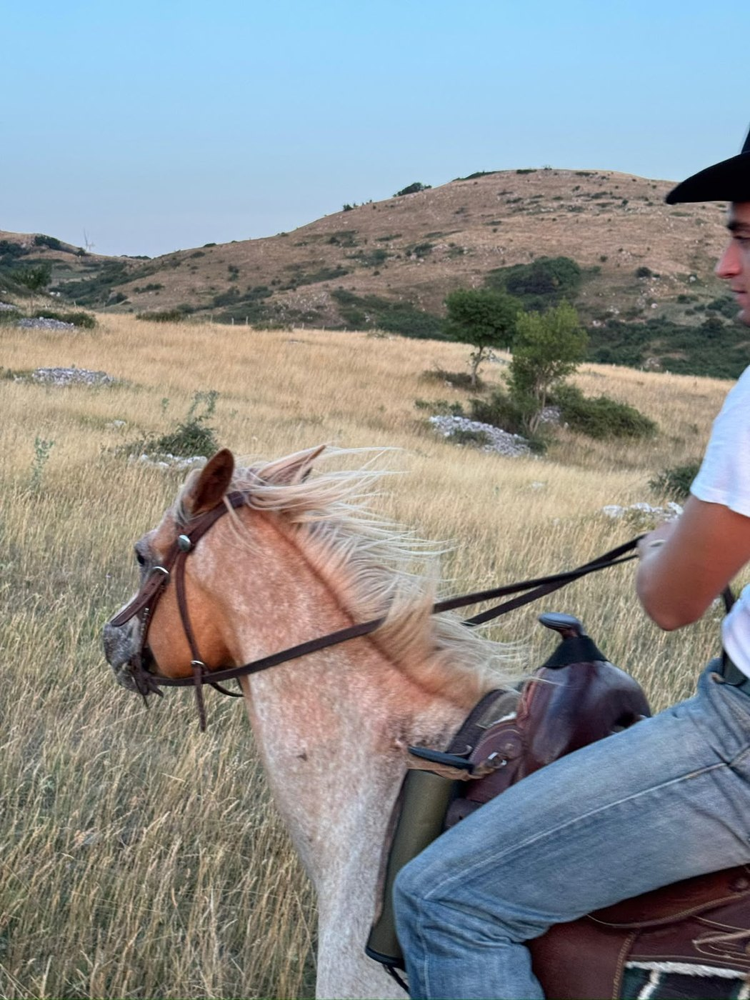
Perché è nato Run Wild
Due fratelli accomunati dalla stessa passione per i cavalli, la natura e uno stile di vita fatto di semplicità, condivisione e autenticità.
Crediamo che il benessere non sia qualcosa da cercare, ma qualcosa da ricordare.
Negli ultimi anni abbiamo accompagnato centinaia di persone in esperienze immerse nella natura. Persone molto diverse tra loro, accomunate dallo stesso bisogno: staccare dalla frenesia e ritrovare una connessione autentica con sé stesse.
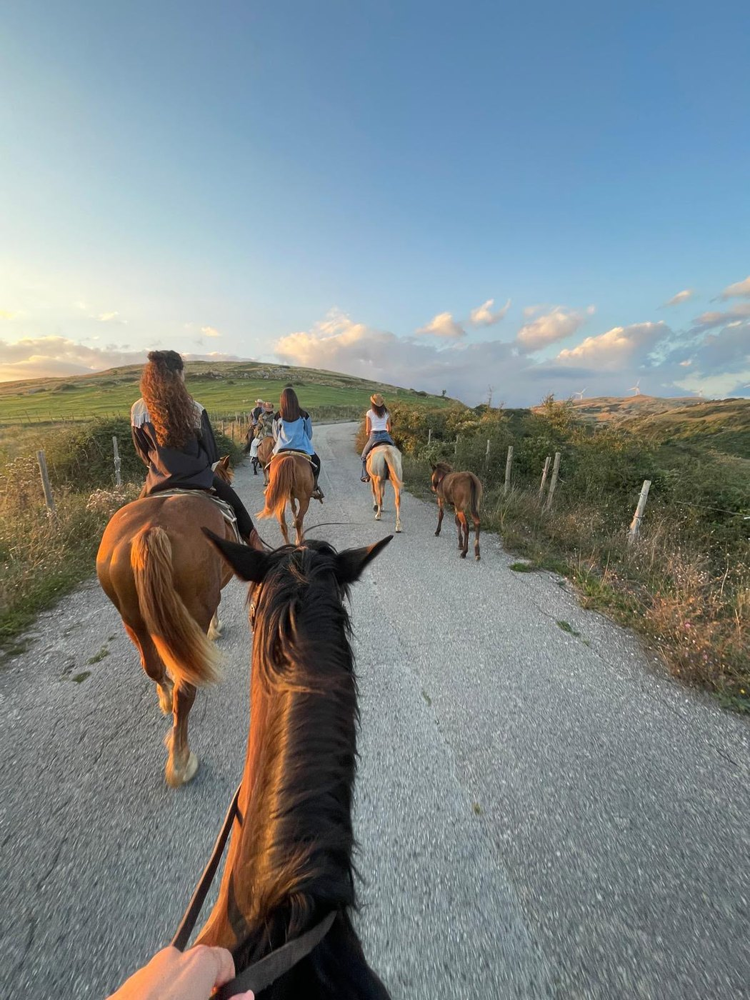
Abbiamo visto sconosciuti diventare amici. Persone arrivare con la testa piena e tornare a casa più leggere.
Frammenti
persone, cavalli, paesaggi, fuoco, tende, tramonti, dettagli
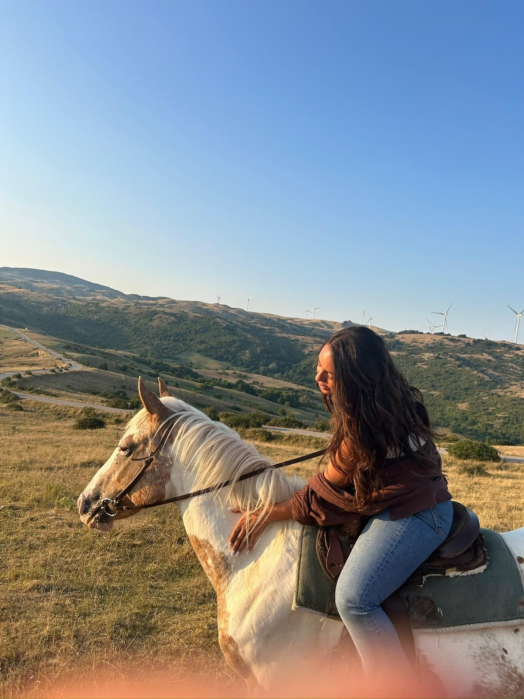
Complicità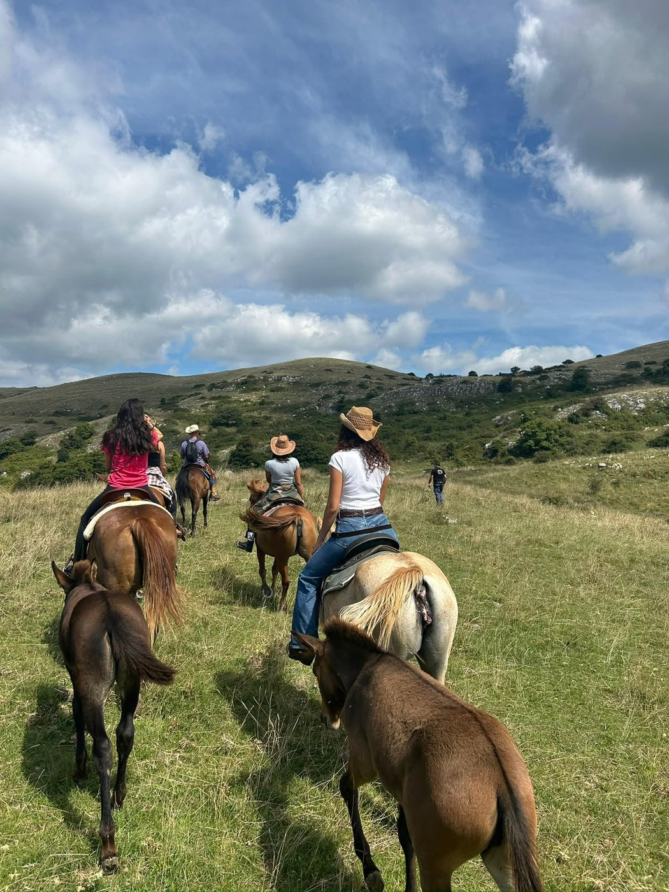
Col branco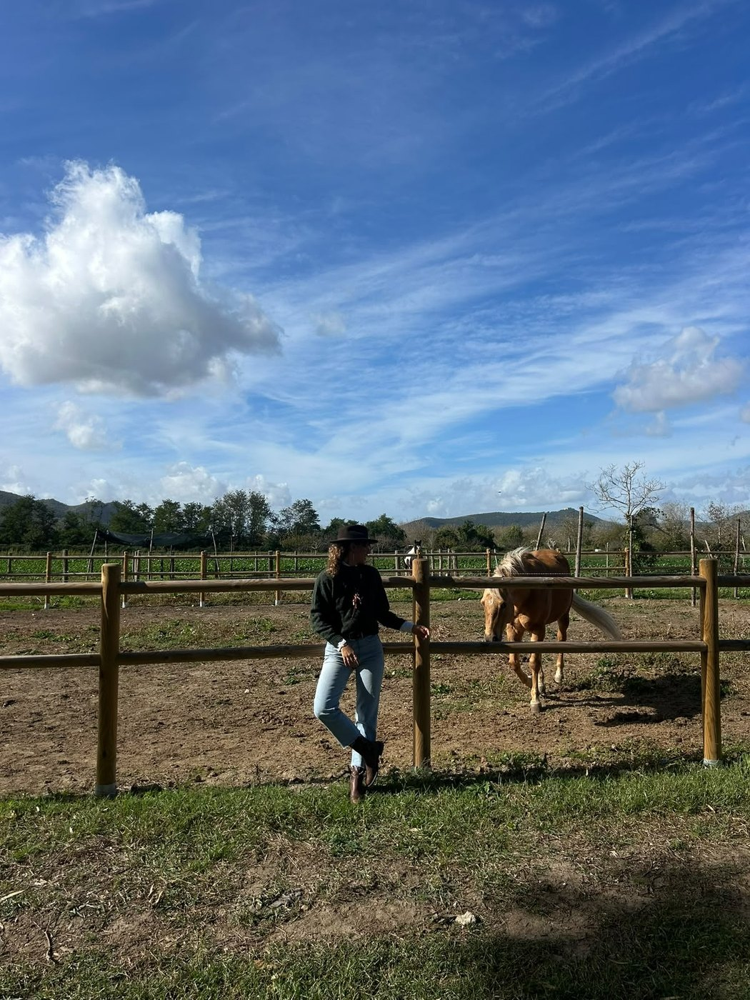
Al maneggio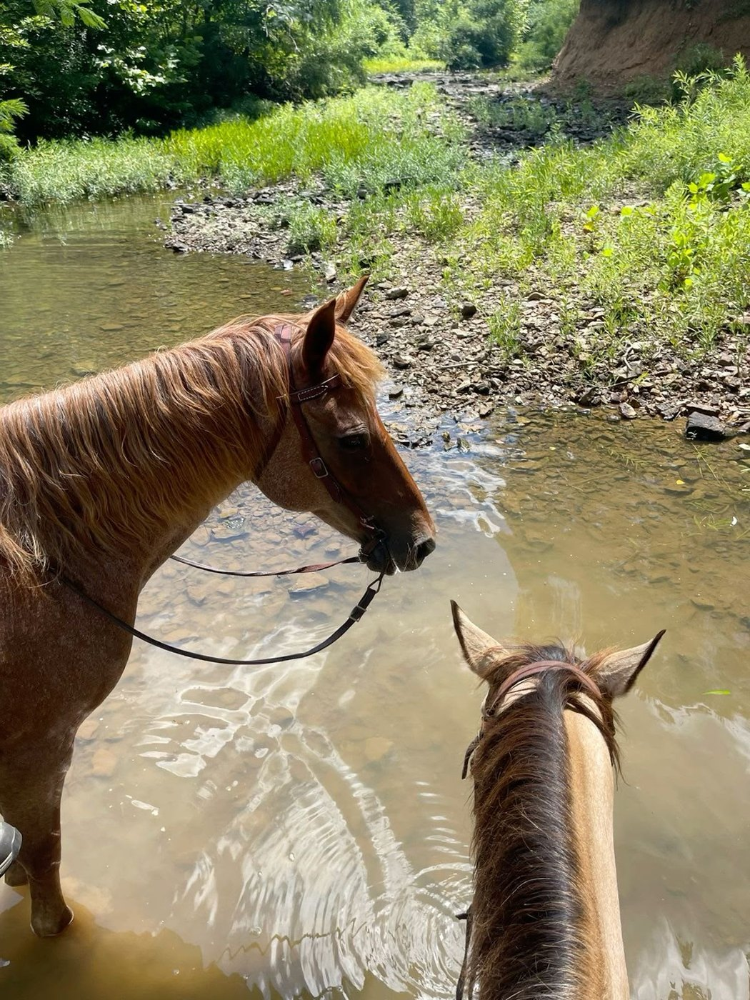
Il panoramaLa community
ogni esperienza nasce per creare relazioni autentiche
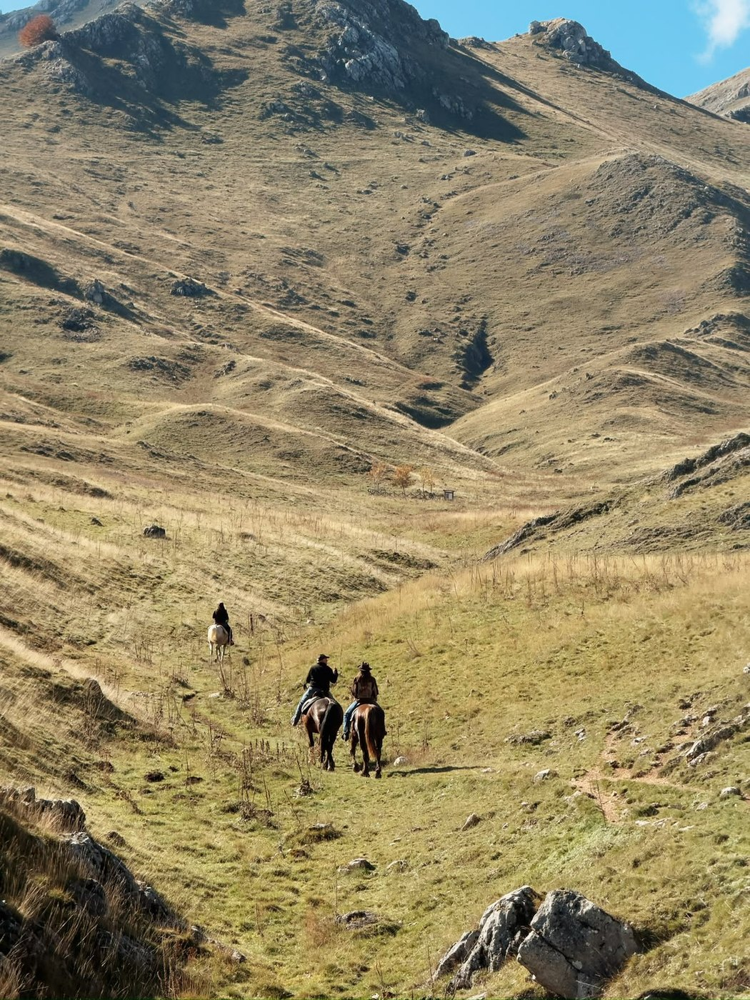
Convivialità nella naturaPartecipa
Tutte le uscite, le date e gli aggiornamenti nascono nel nostro gruppo WhatsApp. È lì che organizziamo le esperienze e ci si tiene in contatto. Unisciti — la natura ti aspetta.
Unisciti al gruppo WhatsApp